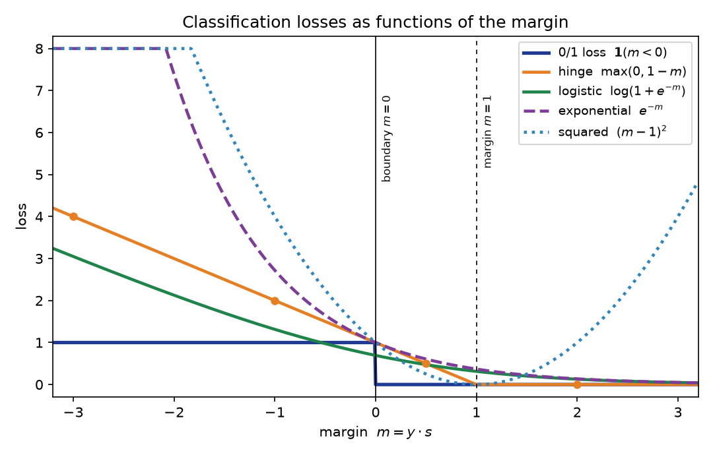

Chapter 35: Loss functions for classification
Everything in §§35.1–35.9 comes from the MLT Week-12 PPT slides (the “loss-function view”: 0/1 loss and its NP-hardness, the four surrogate curves, the perceptron-as-SGD note, the SVM-as-regularization-plus-hinge decomposition, and the logistic-loss margin derivation), with the logistic-regression loss itself from the MITx 6.036 notes (§§31.9–31.10), the hinge loss from §33.3, and the AdaBoost updates from §34.6. §§35.10–35.11 follow ESL ch. 14 (§§14.4–14.6: AdaBoost as forward stagewise exponential-loss minimization, the \(\beta_m\) derivation, the population minimizer, the robustness comparison). The worked comparison in §35.10 and the figure use the chapter’s own tiny datasets, with every number recomputed independently (review log).
Notation. The §22.9 convention: instances \(x^{(i)}\), labels \(\boxed{y^{(i)} \in \{+1, -1\}}\). A classifier produces a real-valued score \(s^{(i)} = s(x^{(i)})\) (e.g. \(w^T x^{(i)} + b\)), and the predicted label is \(\operatorname{sign}(s^{(i)})\). The margin of example \(i\) is \(\boxed{m^{(i)} = y^{(i)} s^{(i)}}\): positive means correct, negative means wrong, and its size says how correct or wrong. Nearly every classification loss is a function of this single number.
35.1 The ideal loss — and why it’s unusable
The loss you actually care about is the one from §22.9: the misclassification (0/1) loss, the fraction of points you get wrong, \[L(f) = \frac{1}{n}\sum_{i=1}^{n}\mathbf{1}\!\left(f(x^{(i)}) \ne y^{(i)}\right).\] It is the scoreboard. But nobody trains with it, and the MLT Week-12 slides say why — three reasons:
- It is flat almost everywhere. §31.7 already made this point for the perceptron: any two hypotheses with the same mistake count “have the same \(J\) value” — the loss cannot tell a near-miss from a confident error, “which makes it difficult to design an algorithm that searches through the space of hypotheses for a good one.”
- It is not differentiable. §31.3’s note: the 0/1-style bill is piecewise constant in the weights, so gradient descent (Chapter 10) has no slope to follow — the gradient is zero wherever it exists.
- Minimizing it over linear separators is NP-hard (the slide’s word, written in red next to the \(\min_w\)). Even if you could handle i) and ii), the combinatorial problem itself is intractable.
So every working algorithm trains on a surrogate: a stand-in loss that is smooth (or at least convex) and easy to minimize, while the 0/1 loss stays on as the judge. That trade is this chapter’s whole subject.
Basically, … “The 0/1 loss is the exam — but you can’t study for it directly. It’s flat (no slope to descend), jagged (no derivatives), and NP-hard to minimize anyway. So every algorithm picks a practice loss that behaves well under optimization and hopes the exam score follows.”
35.2 One yardstick: the margin
Before the zoo, one definition that organizes everything.
Def (margin). For score \(s^{(i)}\) and label \(y^{(i)} \in \{+1,-1\}\), \[\boxed{m^{(i)} = y^{(i)} \cdot s^{(i)}}.\] \(m^{(i)} > 0\) = correct; \(m^{(i)} < 0\) = wrong; \(|m^{(i)}|\) = confidence.
Four regimes a point can be in: - Confident correct: \(m \gg 0\) (e.g. \(m = 2\)). - Correct but shaky: \(0 < m < 1\) (right side of the boundary, but close). - Wrong: \(m < 0\). - Confident wrong: \(m \ll 0\).
Each loss below is a rule for turning this one number into a bill. They all agree that negative margins are mistakes to penalize; they disagree — sometimes violently — on how to price the size, and even on whether a bigger positive margin is always better (§35.5’s squared loss is the rebel).
Basically, … “Multiply the label by the score. Positive: right answer. Negative: wrong answer. Bigger: more confident. Every loss in this chapter is just a different pricing scheme for this one number.”
35.3 Zero-one loss: the ideal, restated in margin form
Def (0/1 loss, per-example). \(\boxed{\ell_{0/1}(m) = \mathbf{1}(m < 0)}\) — \(1\) if wrong, \(0\) if right. The training objective is the average, \(\frac{1}{n}\sum_i \ell_{0/1}(m^{(i)})\), i.e. §22.9’s \(L(f)\).
Note (the \(m = 0\) convention). The MLT slide writes \(\mathbf{1}(\hat w^T x \cdot y < 0)\) with a strict inequality; §22.9’s eg 9 instead defines \(\operatorname{sign}(0) = +1\), so a boundary point counts as a \(+1\) prediction. This chapter follows the slide’s strict form; with no margin exactly \(0\) in any worked example, the two agree everywhere here.
Shape: a step — flat \(1\) for all \(m < 0\), flat \(0\) for all \(m \ge 0\). That is §31.7’s flatness made visible: a point with \(m = -3\) (confidently wrong) and one with \(m = -0.01\) (barely wrong) pay identically.
eg 1 (0/1 on three margins). Margins \(m = 1.5, -0.2, 0.3\): \[\ell_{0/1} = 0,\ 1,\ 0 \qquad\Rightarrow\qquad \text{average } = 1/3.\] The barely-wrong point costs as much as a disaster would — the loss grades whether, never how.
Basically, … “Right: free. Wrong: one rupee — no matter how wrong. The perfect judge and the worst teacher.”
35.4 Hinge loss: the SVM’s bribe
Def (hinge loss). \(\boxed{\ell_{\text{hinge}}(m) = \max(0,\, 1 - m)}.\)
This is the \(\xi_i\) of §33.3 — Chapter 33 promised (§33.10) its full treatment here. There, \(\xi_i = \max\big(1 - y^{(i)}(w^T x^{(i)} + b),\, 0\big)\) was the “bribe” a point pays for violating the margin, and the MLT Week-12 slide re-derives exactly this: pushing each \(\xi_i\) as low as its constraint allows gives \(\xi_i = \max(0, 1 - \hat w_i^T x_i y_i)\), turning the soft-margin primal into \[\min_{w,b}\ \underbrace{\tfrac12\lVert w\rVert^2}_{\text{model-dependent}} + C\sum_{i=1}^{n}\underbrace{\max(0, 1 - y^{(i)}(w^T x^{(i)} + b))}_{\text{data-dependent loss}}\] — “regularization + hinge loss,” in the slide’s words.
How it grades the four regimes: - \(m \ge 1\): \(\boxed{0}\) — satisfied, pays nothing. The SVM doesn’t just want correct; it wants correct by a margin of 1. - \(0 < m < 1\): \(1 - m > 0\) — correct, but still charged. A point barely on the right side pays almost \(1\). - \(m < 0\): \(1 - m > 1\) — wrong, and charged more than the 0/1 loss’s flat \(1\), growing linearly with how wrong.
Note (convex, but not smooth). The subgradient w.r.t. \(w\): \(-xy\) when \(w^Txy < 1\) (the loss’s active region — including correct-but-shaky points, not just mistakes), \(0\) when \(w^Txy > 1\), and the whole interval between \(-xy\) and \(0\) at the kink \(w^Txy = 1\) — a subgradient, the standard replacement for a derivative at a convex kink. (The MLT slide’s “\(-xy\) on mistakes, \(0\) elsewhere, kink at \(w^Txy = 0\)” bullet was its perceptron statement — the modified hinge of §35.8, not this one.)
eg 2 (hinge on three margins). \(m = 1.5, -0.2, 0.3\): \[\max(0, -0.5) = 0,\quad \max(0, 1.2) = 1.2,\quad \max(0, 0.7) = 0.7.\] Compare eg 1: the barely-wrong point pays \(1.2\) (more than 0/1’s \(1\)), and the barely-right point pays \(0.7\) where 0/1 paid \(0\). The SVM taxes uncertainty.
Basically, … “Being right isn’t enough — be right with room to spare. Margin above \(1\): free. Anything less: you pay \(1 - m\), even if you were technically correct. It’s the strict teacher who marks down shaky answers.”
35.5 Squared loss: regression doing classification
The MLT slide’s “Alg 1: using regression for classification” just fits \((g(x) - y)^2\) with \(y \in \{+1, -1\}\) and \(\hat h(x) = \operatorname{sign}(g(x))\). Expanding: \[(g - y)^2 = g^2 + y^2 - 2gy = (gy)^2 + 1 - 2gy = \boxed{\ell_{\text{sq}}(m) = (m - 1)^2},\] using \(y^2 = 1\). (The MLT Week-12 practice assignment’s Q2 computes exactly this loss on a dataset — answer \(7\).)
The shape is a parabola with its zero at \(m = 1\). Two consequences the slide’s plot shows:
- It punishes over-confidence. At \(m = 2.5\) (very confidently correct), \(\ell_{\text{sq}} = 2.25\) — more than at \(m = 0\)! It was built for regression, where the score should equal the label; “too right” is as bad as wrong.
- It is monotone-wrong. ESL §14.6: squared error “is not a monotone decreasing function of increasing margin … for margin values \(y_i f(x_i) > 1\) it increases quadratically, thereby placing increasing influence (error) on observations that are correctly classified with increasing certainty, thereby reducing the relative influence of those incorrectly classified.” Conclusion: “if class assignment is the goal, a monotone decreasing criterion serves as a better surrogate loss function.”
eg 3 (the confidence tax). \(m = 2.5, -1, 0.2\): \[\ell_{\text{sq}} = 2.25,\ 4,\ 0.64 \qquad\text{vs hinge:}\qquad 0,\ 2,\ 0.8.\] At \(m = 2.5\) the hinge is fully satisfied (\(0\)) while squared charges \(2.25\) — the parabola’s right arm is the giveaway that this loss doesn’t understand classification.
Basically, … “Squared loss wants the score to equal the label, not just agree with it. Nail the answer too confidently and it fines you for showing off. That’s why it’s a regression loss moonlighting in classification — and not a great one (ESL says so outright).”
35.6 Logistic loss: cross-entropy in margin form
§31.9’s loss was the negative log-likelihood with \(\{0,1\}\) labels, \[\boxed{L_{\mathrm{nll}}(g, y) = -\big(y\log g + (1-y)\log(1-g)\big)},\] \(g = \sigma(\theta^T x + \theta_0)\). The MLT Week-12 slide converts it to the \(\{\pm 1\}\) margin form. Writing \(z_i = 1\) for \(y_i = +1\) and \(z_i = 0\) for \(y_i = -1\), with \(s_i = \hat w^T x_i\):
- \(z_i = 1\): \(-\log\sigma(s_i) = -\log\frac{1}{1+e^{-s_i}} = \log(1 + e^{-s_i}) = \log(1 + e^{-y_i s_i})\).
- \(z_i = 0\): \(-\log(1-\sigma(s_i)) = -\log\frac{e^{-s_i}}{1+e^{-s_i}} = \log(1 + e^{s_i}) = \log(1 + e^{-y_i s_i})\).
Both cases collapse to one formula: \[\boxed{\ell_{\text{log}}(m) = \log\!\left(1 + e^{-m}\right), \qquad m = y \cdot s}.\] The slide boxes exactly this as the “logistic loss,” and the objective becomes \(\min_w \sum_i \log(1 + e^{-y_i s_i})\). This is §31.15(iii)’s “first specimen” \(L_{\mathrm{nll}}\), now in its margin uniform.
Behavior: at \(m = 0\) it pays \(\log 2 \approx 0.693\); for large positive \(m\) it decays toward \(0\) (never quite reaching it — §31.10: on separable data the weights inflate toward infinite certainty); for large negative \(m\) it grows linearly (\(\log(1+e^{-m}) \approx -m\)), much gentler than the exponential loss (§35.7). Unlike hinge it never hits exactly \(0\); unlike squared it never punishes being too right.
eg 4 (the two faces agree). \(\{0,1\}\) form: \(g = 0.8\), \(y = 1\): \[L_{\mathrm{nll}} = -\log 0.8 = 0.2231.\] Margin form: \(s = \sigma^{-1}(0.8) = \log\frac{0.8}{0.2} = \log 4 = 1.3863\), \(m = (+1)(1.3863)\): \[\log(1 + e^{-1.3863}) = \log(1 + 0.25) = \log 1.25 = 0.2231.\ \checkmark\] Same bill, two notations — the margin form just hides the \(\{0,1\}\!\leftrightarrow\!\{\pm1\}\) bookkeeping.
Basically, … “Cross-entropy asks: ‘how probable did I say the true label was?’ Take negative log of that probability. The margin formula \(\log(1+e^{-m})\) is the same question rewritten so both label conventions give one line. Confident and right: nearly free. Confident and wrong: the bill grows without bound — but only linearly, not exponentially.”
35.7 Exponential loss: AdaBoost’s engine
Def (exponential loss). \(\boxed{\ell_{\exp}(m) = e^{-m}}.\)
The MLT slide’s “Boosting” bullet gives it in one line: \(\text{Loss} = e^{-y\,h(x)}\). §35.11 derives why AdaBoost is secretly minimizing exactly this — but the shape already tells the story: at \(m = 0\) it pays \(1\); for \(m > 0\) it decays toward \(0\); for \(m < 0\) it explodes exponentially. A point with margin \(-3\) pays \(e^{3} \approx 20.09\) — twenty times the 0/1 loss’s flat \(1\).
ESL §14.6 compares it with the logistic (binomial deviance) loss: “The penalty associated with binomial deviance increases linearly for large increasingly negative margin, whereas the exponential criterion increases the influence of such observations exponentially.” The price of that steepness: the exponential criterion “concentrates much more influence on observations with large negative margins,” while the deviance is “far more robust in noisy settings … especially in situations where there is misspecification of the class labels in the training data” — and “the performance of AdaBoost has been empirically observed to dramatically degrade in such situations.” Mislabeled points scream under the exponential bill.
eg 5 (the explosion). \(m = 1.5, -0.2, 0.3\): \[e^{-1.5} = 0.2231,\quad e^{0.2} = 1.2214,\quad e^{-0.3} = 0.7408.\] The barely-wrong point pays \(1.22\) (above 0/1’s \(1\) already at \(m = -0.2\)); a confident error at \(m = -3\) would pay \(20.09\). Compare logistic’s \(3.05\) there — the exponential curve is the steepest punisher of confident mistakes in the zoo.
Basically, … “Exponential loss is the drama queen: correct answers get pocket change, but a confident mistake gets billed exponentially. That’s why AdaBoost obsesses over hard points — and why a mislabeled point can hijack it (ESL documents the degradation).”
35.8 The perceptron’s loss: hinge without the margin
§31.3’s per-example error, \(e^{(i)} = \max(0, -w^T\phi(x^{(i)})y^{(i)})\), is the modified hinge loss \(\boxed{\ell_{\text{mod-hinge}}(m) = \max(0, -m)}\) — the hinge with the margin demand deleted (compare §35.4’s \(\max(0, 1-m)\)). Correct: \(0\). Wrong: \(-m = |m|\), linear in how wrong.
And the MLT slide draws the consequence: with subgradient \(-xy\) on mistakes (\(w^Txy < 0\)), \(0\) elsewhere, one SGD step with step size \(1\) gives \[w_{t+1} = w_t - 1\cdot(-x_i y_i) = w_t + x_i y_i \quad\text{(on mistakes)},\] i.e. the perceptron update (§31.4) — “perceptron can be interpreted as SGD with modified hinge loss with step size \(= 1\)” (the slide’s words; §31.4’s \((y^{(i)} - \hat y^{(i)}) = \pm 2\) on mistakes folds the extra factor of \(2\) into the step size).
So the perceptron does have a loss after all — just the least demanding one in the zoo: it asks only for the right side of the boundary, no margin, no probabilities. That is §31.7’s blind spot in one formula.
Basically, … “The perceptron’s loss is the hinge loss with the ambition removed: right side = free, wrong side = pay \(|m|\). No margin demand, no probability. And its famous update rule is just one SGD step on this loss — ‘learn only when wrong’ falls out of the subgradient being zero on correct points.”
35.9 Surrogate losses: the trade
Collecting the MLT slide’s conclusions (its closing list, verbatim in spirit):
- 0/1 loss is NP-hard to minimize — the ideal is intractable (§35.1).
- Different algorithms use different “surrogate” losses — SVM → hinge, logistic regression → logistic/cross-entropy, AdaBoost → exponential, perceptron → modified hinge, least-squares-for-classification → squared.
- Surrogates are convex and hence easy to minimize — every curve in the zoo (except 0/1) is convex in the margin, so gradient/subgradient methods apply.
The deal, then: train on the surrogate, evaluate on 0/1. The surrogate is the practice ground you can optimize; the 0/1 loss is the exam you actually care about. ESL’s Figure-14.3 note makes the gap concrete: in boosting, “the training-set misclassification error decreases to zero” after ~250 iterations “while the exponential loss continues to decrease” — “Clearly AdaBoost is not optimizing training-set misclassification error; the exponential loss is more sensitive to changes in the estimated class probabilities.”
Note (which surrogates bound 0/1). The slide’s plot shows the surrogates sitting above the 0/1 step — almost. Hinge, squared, and exponential are genuine upper bounds of \(\mathbf{1}(m<0)\) everywhere (check: \(\max(0,1-m) \ge 1\) for \(m \le 0\); \((m-1)^2 > 1\) for \(m < 0\); \(e^{-m} \ge 1\) for \(m \le 0\)). The logistic loss is not: at \(m = -0.5\), \(\log(1+e^{0.5}) = 0.9741 < 1\). It dips a hair below the step for small negative margins — a fine-print exception worth knowing.

Basically, … “You can’t minimize the exam, so you minimize a practice test that’s shaped like the exam but smooth enough to study with. Pick the practice test your algorithm was built for — they’re all convex, so the studying is easy. Just remember the practice score isn’t the exam score: AdaBoost can keep improving its exponential loss long after its mistake count hits zero.”
35.10 The big comparison: one dataset, five losses
Five points, fixed once, scored under every loss. Scores \(s\) and labels \(y\):
| point | \(s\) | \(y\) | margin \(m = ys\) | verdict |
|---|---|---|---|---|
| A | \(2.0\) | \(+1\) | \(2.0\) | confident correct |
| B | \(0.5\) | \(+1\) | \(0.5\) | correct, shaky |
| C | \(-0.5\) | \(-1\) | \(0.5\) | correct, shaky |
| D | \(-1.0\) | \(+1\) | \(-1.0\) | wrong |
| E | \(3.0\) | \(-1\) | \(-3.0\) | confident wrong |
The bills (every number recomputed by hand and in numpy — review log):
| point | \(m\) | 0/1 \(\mathbf{1}(m<0)\) | hinge \(\max(0,1-m)\) | logistic \(\log(1+e^{-m})\) | squared \((m-1)^2\) | exponential \(e^{-m}\) |
|---|---|---|---|---|---|---|
| A | \(2.0\) | \(0\) | \(0\) | \(0.1269\) | \(1\) | \(0.1353\) |
| B | \(0.5\) | \(0\) | \(0.5\) | \(0.4741\) | \(0.25\) | \(0.6065\) |
| C | \(0.5\) | \(0\) | \(0.5\) | \(0.4741\) | \(0.25\) | \(0.6065\) |
| D | \(-1.0\) | \(1\) | \(2\) | \(1.3133\) | \(4\) | \(2.7183\) |
| E | \(-3.0\) | \(1\) | \(4\) | \(3.0486\) | \(16\) | \(20.0855\) |
| total | \(2\) (\(0.4\) avg) | \(7\) (\(1.4\) avg) | \(5.4369\) (\(1.0874\) avg) | \(21.5\) (\(4.3\) avg) | \(24.1522\) (\(4.8304\) avg) |
Reading the table:
- B and C (correct but shaky): 0/1 charges nothing; hinge charges \(0.5\) — the margin demand made visible. Logistic (\(0.4741\)) and exponential (\(0.6065\)) also tax shakiness, gently.
- A (confident correct): hinge is satisfied (\(0\)); squared is the only loss that punishes it (\(1\)) — the confidence tax of §35.5.
- E (confident wrong): 0/1’s flat \(1\) against exponential’s \(20.09\). Every surrogate punishes confident errors harder than 0/1 — that extra slope is exactly what makes them trainable.
- Ordering of harshness on mistakes: exponential \(>\) squared \(>\) hinge \(>\) logistic \(>\) 0/1 on point E. The losses don’t just differ in shape; they differ in temperament.
Basically, … “Same five predictions, five different report cards. 0/1 only counts bodies. Hinge fines you for being right-but-nervous. Squared fines you for being right-and-smug. Exponential goes nuclear on confident mistakes. Logistic stays the calm middle — which is why it’s the default.”
35.11 Why AdaBoost’s weights update the way they do
§34.10(iii) promised this story: ESL’s deeper theory (ch. 14) shows AdaBoost fits an additive model optimizing the exponential loss — and once you see it, the \(e^{\pm\alpha}\) updates stop looking like magic.
Setup. The final classifier is a weighted vote, \(G(x) = \operatorname{sign}(f_M(x))\) with \[f_M(x) = \sum_{m=1}^{M} \beta_m G_m(x), \qquad G_m(x) \in \{+1,-1\},\] an additive expansion in the base classifiers (ESL §14.2). The claim (ESL §14.4): AdaBoost.M1 is forward stagewise additive modeling — build \(f_M\) one term at a time, never revisiting old terms — with the exponential loss \[\boxed{L(y, f(x)) = e^{-y\,f(x)}} \qquad\text{(ESL (14.8))}.\]
Step 1 — the weights are the loss. At round \(m\), the model so far is \(f_{m-1}\). Choosing the next pair \((\beta, G)\) to minimize the total exponential loss: \[(\beta_m, G_m) = \arg\min_{\beta, G}\ \sum_{i=1}^{n} \exp\!\big[-y_i\big(f_{m-1}(x_i) + \beta G(x_i)\big)\big].\] Factor out everything independent of \((\beta, G)\): \[= \arg\min_{\beta, G}\ \sum_{i=1}^{n} \underbrace{e^{-y_i f_{m-1}(x_i)}}_{w_i^{(m)}}\ e^{-\beta y_i G(x_i)} \qquad\text{(ESL (14.9))}.\] The weights \(w_i^{(m)} = e^{-y_i f_{m-1}(x_i)}\) are the current per-point exponential loss — no separate invention needed. Reweighting is loss bookkeeping.
Step 2 — fitting \(G_m\) means minimizing weighted error. Fix \(\beta > 0\). Since \(y_i G(x_i) = +1\) on correct points and \(-1\) on wrong ones, \[\sum_i w_i^{(m)} e^{-\beta y_i G(x_i)} = e^{-\beta}\!\!\sum_{\text{correct}}\! w_i^{(m)} + e^{\beta}\!\!\sum_{\text{wrong}}\! w_i^{(m)} = (e^{\beta} - e^{-\beta})\sum_i w_i^{(m)}\mathbf{1}(y_i \ne G(x_i)) + e^{-\beta}\sum_i w_i^{(m)},\] so the minimizer is \[\boxed{G_m = \arg\min_G\ \sum_{i=1}^{n} w_i^{(m)}\,\mathbf{1}(y_i \ne G(x_i))} \qquad\text{(ESL (14.10))}\] — “fit the weak classifier to the data weighted by \(D_{m-1}\)” (§34.6(ii)) falls out of the loss, not from a heuristic.
Step 3 — the optimal vote weight. Let \(\mathrm{err}_m\) be \(G_m\)’s weighted error rate (ESL (14.13)). Minimizing the criterion over \(\beta\) is one-variable calculus: with total weight \(W\), \[C(\beta) = e^{-\beta}W(1-\mathrm{err}_m) + e^{\beta}W\,\mathrm{err}_m, \quad \frac{dC}{d\beta} = 0 \iff e^{2\beta} = \frac{1-\mathrm{err}_m}{\mathrm{err}_m},\] \[\boxed{\beta_m^\star = \tfrac12\log\frac{1-\mathrm{err}_m}{\mathrm{err}_m}} \qquad\text{(ESL (14.12))}\] — the course’s \(\alpha_m\) (§34.6(iii); the Note there covers ESL’s factor-of-2 convention).
Step 4 — the \(e^{\pm\alpha}\) update. The next round’s weights are the updated loss: \[\boxed{w_i^{(m+1)} = w_i^{(m)}\,e^{-\beta_m^\star\, y_i G_m(x_i)}} \qquad\text{(ESL (14.14))}.\] Since \(y_i G_m(x_i) = +1\) (correct) or \(-1\) (wrong): - correct: multiply by \(e^{-\beta_m^\star}\), - wrong: multiply by \(e^{+\beta_m^\star}\).
With the course’s \(\alpha_m = \beta_m^\star\): misclassified \(\times e^{+\alpha_m}\), correctly classified \(\times e^{-\alpha_m}\) — exactly §34.6(iv). (ESL writes it as \(w_i^{(m)}e^{\alpha_m\mathbf{1}(\text{wrong})}e^{-\beta_m}\) with \(\alpha_m = 2\beta_m\); the common \(e^{-\beta_m}\) factor normalizes away — ESL (14.15).)
So the “why”: the weights are the exponential loss of the model built so far, and because the loss is exponential, adding a term to the model multiplies each point’s loss by \(e^{-\beta y G}\) — i.e. by \(e^{+\alpha}\) for mistakes and \(e^{-\alpha}\) for hits. Nothing arbitrary; it is the additive model updating its own books.
Two sourced footnotes.
- What it estimates. The population minimizer of the exponential loss is \(f^\star(x) = \tfrac12\log\frac{P(Y=1\mid x)}{P(Y=-1\mid x)}\) — one-half the log-odds (ESL (14.16), “easy to show (Friedman et al. 2000)” — the proof is cited, not shown, in ESL). Hence \(\operatorname{sign}(f_M)\) is a justified classification rule. The binomial deviance (logistic loss, ESL (14.18)) shares this population minimizer — but “\(e^{-Yf}\) itself is not a proper log-likelihood, since it is not the logarithm of any probability mass function” (ESL §14.5).
- Surrogate ≠ scoreboard, again. ESL’s Figure-14.3 note (§35.9): training misclassification hits zero while the exponential loss keeps decreasing — “AdaBoost is not optimizing training-set misclassification error; the exponential loss is more sensitive to changes in the estimated class probabilities.”
Basically, … “AdaBoost’s weights aren’t a trick — they’re the current exponential loss, one number per point. Add a stump to the model and each point’s loss gets multiplied by \(e^{+\alpha}\) (if the stump missed it) or \(e^{-\alpha}\) (if it got it). The \(e^{\pm\alpha}\) update is just the loss doing its own accounting. And at the population level, all that multiplying is estimating half the log-odds — which is why taking the sign at the end is legitimate.”
35.12 Strengths and limits (as the sources list them)
Strengths. i) The zoo is honest. Each loss wears its algorithm’s priorities on its sleeve: hinge demands a margin (SVM), logistic grades probabilities (logistic regression), exponential obsesses over hard points (AdaBoost), modified hinge asks only for the right side (perceptron). ii) Convexity buys optimizability. Every surrogate here is convex in the margin — the MLT slide’s whole point: “surrogates are convex and hence easy to minimize.” iii) The margin unifies them. One number, five pricing schemes — the comparison table of §35.10 is the chapter in miniature.
Limits. i) The surrogate is not the goal. Training loss and 0/1 loss can diverge (ESL’s Figure-14.3 note, §35.9/§35.11) — §22.10’s “training loss is not the goal” in a new costume. ii) Surrogates have their own pathologies. Squared punishes confident-correct points (ESL §14.6: “not a good surrogate”); exponential degrades on mislabeled data (ESL §14.6); logistic has no finite minimizer on separable data without regularization (§31.10); hinge has a kink at \(m = 1\) (subgradients needed). iii) 0/1 stays NP-hard. The slide states it without proof — this chapter reports the claim, not a proof.
Basically, … “Surrogates are practice tests: convex, gradeable, each with its own bias. None of them is the exam, and each has a failure mode. Know which practice test you’re taking and what it lies about.”
35.13 Where this goes next
Part IV closes here. Four promises, kept:
- §30.11 (“Classification losses get their own chapter”) — kept: this chapter.
- §31.15(iii) (“\(L_{\mathrm{nll}}\) was the first specimen”) — kept: §35.6 puts it in margin form alongside the rest.
- §33.10 (hinge loss “gets its full treatment”) — kept: §35.4, with the \(\xi_i\) of §33.3 identified as the hinge loss.
- §34.10(iii) (“the ‘why do the weights update this way’ story”) — kept: §35.11.
Part VI picks the thread straight back up: the MLT Week-12 slides close with neural networks trained by cross-entropy loss for classification (slide 2’s \(p(y\mid x)\) diagram, “Cross-Entropy Loss”) — the logistic loss of §35.6, scaled up to deep networks. Chapter 41 is where that story continues.
Basically, … “Every classifier you met in Part IV was secretly a loss function wearing a trench coat. Part V takes the same losses — cross-entropy front and center — and trains neural networks with them.”
Problem set
- Margin and 0/1. Points \((s, y)\): \(A = (1.5, +1)\), \(B = (-0.4, +1)\), \(C = (-2.2, -1)\), \(D = (0.8, -1)\), \(E = (0.2, +1)\). (i) Compute each margin \(m = ys\). (ii) Using \(\ell_{0/1} = \mathbf{1}(m < 0)\), give each point’s loss and the average.
- Hinge’s margin demand. Same five points. (i) Compute each hinge loss \(\max(0, 1-m)\) and the total. (ii) Which points are correct (\(m > 0\)) yet still charged? (iii) In one line: why does the SVM charge them?
- Squared loss’s confidence tax. Margins \(2.5\), \(-1\), \(0.2\). (i) Compute \((m-1)^2\) and \(\max(0, 1-m)\) for each. (ii) At which margin(s) does squared charge more than hinge? (iii) In one line: why would a loss ever dislike \(m = 2.5\)?
- Logistic, two faces. (i) In \(\{0,1\}\) notation compute \(L_{\mathrm{nll}}\) for \((g, y) = (0.8, 1)\) and \((0.2, 0)\). (ii) Convert both to \(\pm 1\) notation: find each score \(s = \sigma^{-1}(g)\), each margin \(m\), and verify \(\log(1+e^{-m})\) equals the (i) answers.
- Perceptron = modified-hinge SGD. For a misclassified point, \(\ell(w) = \max(0, -y\,w^T x)\). (i) Write the loss without the \(\max\) and compute \(\nabla_w \ell\). (ii) Take one SGD step with step size \(1\) and show it is the perceptron update \(w \gets w + yx\) (cf. §31.4). (iii) What happens on a correctly classified point, and which §31.4 phrase does that match?
- AdaBoost weights from exponential loss. Normalized weights \(w_i\) (\(\sum_i w_i = 1\)); fixed \(G\); \(\mathrm{err} = \sum_{i:\,y_i \ne G(x_i)} w_i\). (i) Write \(C(\beta) = \sum_i w_i e^{-\beta y_i G(x_i)}\) in terms of \(\mathrm{err}\) and show \(\beta^\star = \tfrac12\ln\frac{1-\mathrm{err}}{\mathrm{err}}\). (ii) Show the updated weights \(w_i e^{-\beta^\star y_i G(x_i)}\) equal §34.6(iv)’s update (misclassified \(\times e^{+\alpha_m}\), correct \(\times e^{-\alpha_m}\)) with the course’s \(\alpha_m\). (iii) In one line: which step of the derivation forces \(G_m\) to minimize the weighted error?
- True or false, one-line justification: (i) The hinge loss is differentiable everywhere. (ii) The logistic loss upper-bounds the 0/1 loss. (iii) A point with margin exactly \(1\) pays hinge loss \(1\). (iv) AdaBoost’s \(\operatorname{sign}(f_M(x))\) is justified because \(f^\star\) estimates half the log-odds. (v) Minimizing 0/1 loss over linear separators is NP-hard (per the MLT slides). (vi) \(e^{-Yf}\) is a proper log-likelihood.
Solutions
Attempt each problem first, then click a problem to reveal its worked solution.
\(m = ys\):
(i) \(A\): \((+1)(1.5) = \boxed{1.5}\); \(B\): \((+1)(-0.4) = \boxed{-0.4}\); \(C\): \((-1)(-2.2) = \boxed{2.2}\); \(D\): \((-1)(0.8) = \boxed{-0.8}\); \(E\): \((+1)(0.2) = \boxed{0.2}\).
(ii) \(\ell_{0/1} = \mathbf{1}(m < 0)\): \(A: 0\), \(B: 1\), \(C: 0\), \(D: 1\), \(E: 0\). Average \(= \boxed{2/5 = 0.4}\).
(i) \(\max(0, 1-m)\): \(A\): \(\max(0, -0.5) = \boxed{0}\); \(B\): \(\max(0, 1.4) = \boxed{1.4}\); \(C\): \(\max(0, -1.2) = \boxed{0}\); \(D\): \(\max(0, 1.8) = \boxed{1.8}\); \(E\): \(\max(0, 0.8) = \boxed{0.8}\). Total \(= 0 + 1.4 + 0 + 1.8 + 0.8 = \boxed{4.0}\) (mean \(0.8\)).
(ii) \(\boxed{E}\): \(m = 0.2 > 0\) (correct) but charged \(0.8\).
(iii) The SVM doesn’t ask “right side?” — it asks “margin \(\ge 1\)?”; anything short pays the \(\xi_i\) bribe of §33.3.
(i) - \(m = 2.5\): \((2.5-1)^2 = \boxed{2.25}\); hinge \(\max(0, -1.5) = \boxed{0}\). - \(m = -1\): \((-1-1)^2 = \boxed{4}\); hinge \(\max(0, 2) = \boxed{2}\). - \(m = 0.2\): \((0.2-1)^2 = \boxed{0.64}\); hinge \(\max(0, 0.8) = \boxed{0.8}\).
(ii) Squared charges more at \(\boxed{m = 2.5}\) (\(2.25 > 0\)) and \(\boxed{m = -1}\) (\(4 > 2\)); at \(m = 0.2\) it charges less (\(0.64 < 0.8\)).
(iii) Squared loss is a regression loss: it wants the score to equal the label, so \(m = 2.5\) (“too right”) counts as an error.
(i) \(L_{\mathrm{nll}}(g, y) = -\big(y\log g + (1-y)\log(1-g)\big)\): - \((0.8, 1)\): \(-\log 0.8 = \boxed{0.2231}\) (to 4 s.f.). - \((0.2, 0)\): \(-\log(1 - 0.2) = -\log 0.8 = \boxed{0.2231}\).
(ii) \(s = \sigma^{-1}(g) = \log\frac{g}{1-g}\): - Case 1: \(s = \log\frac{0.8}{0.2} = \log 4 = 1.3863\); \(y = +1\) so \(m = 1.3863\); \(\log(1+e^{-1.3863}) = \log(1+0.25) = \log 1.25 = \boxed{0.2231}\ \checkmark\). - Case 2: \(s = \log\frac{0.2}{0.8} = -\log 4 = -1.3863\); \(y = -1\) so \(m = (-1)(-1.3863) = 1.3863\); same \(\boxed{0.2231}\ \checkmark\).
Both notations bill identically — the margin form absorbs the \(\{0,1\}\!\leftrightarrow\!\{\pm 1\}\) conversion.
(i) Misclassified \(\Rightarrow -y\,w^T x > 0\), so the \(\max\) drops: \(\ell(w) = -y\,w^T x\). Then \(\boxed{\nabla_w \ell = -yx}\).
(ii) One SGD step with step size \(1\): \[w \gets w - 1\cdot\nabla_w\ell = w - (-yx) = \boxed{w + yx},\] the perceptron update (the MLT slide’s form; §31.4’s \((y^{(i)} - \hat y^{(i)}) = \pm 2\) on mistakes folds the factor of \(2\) into the step size).
(iii) Correctly classified \(\Rightarrow -y\,w^T x \le 0 \Rightarrow \ell = 0 \Rightarrow\) gradient \(0 \Rightarrow\) no update — §31.4’s “learn only when wrong.”
(i) Split on \(y_i G(x_i) = \pm 1\); with normalized weights the correct mass is \(1-\mathrm{err}\), the wrong mass \(\mathrm{err}\): \[C(\beta) = e^{-\beta}(1-\mathrm{err}) + e^{\beta}\,\mathrm{err}.\] \[\frac{dC}{d\beta} = -e^{-\beta}(1-\mathrm{err}) + e^{\beta}\,\mathrm{err} = 0 \iff e^{2\beta} = \frac{1-\mathrm{err}}{\mathrm{err}} \iff \boxed{\beta^\star = \tfrac12\ln\frac{1-\mathrm{err}}{\mathrm{err}}}.\]
(ii) \(w_i \gets w_i\,e^{-\beta^\star y_i G(x_i)}\): correct (\(y_iG = +1\)) gets \(\times e^{-\beta^\star}\); wrong (\(y_iG = -1\)) gets \(\times e^{+\beta^\star}\). The course’s \(\alpha_m\) (§34.6(iii)) equals \(\beta^\star\), so this is exactly misclassified \(\times e^{+\alpha_m}\), correct \(\times e^{-\alpha_m}\) — §34.6(iv). \(\checkmark\)
(iii) Step 2 of §35.11: for any fixed \(\beta > 0\), the exponential-loss criterion over \(G\) equals \((e^{\beta}-e^{-\beta})\sum_i w_i\mathbf{1}(y_i \ne G(x_i))\) plus a constant — so minimizing it over \(G\) is minimizing the weighted error.
(i) False. Kink at \(m = 1\): the subgradient there is the whole interval \([-1, 0]xy\) (MLT slide), not a single derivative.
(ii) False. Counterexample \(m = -0.5\): \(\log(1+e^{0.5}) = \log(2.6487) \approx \boxed{0.9741} < 1 = \ell_{0/1}\). (Hinge, squared, and exponential do upper-bound 0/1 everywhere — verified on a grid in the review log.)
(iii) False. \(\max(0, 1-1) = \boxed{0}\) — margin exactly \(1\) is precisely where the hinge turns off.
(iv) True. ESL (14.16): \(f^\star(x) = \tfrac12\log\frac{P(Y=1\mid x)}{P(Y=-1\mid x)}\) — half the log-odds — so \(\operatorname{sign}(f_M)\) is a legitimate classification rule.
(v) True — as stated (not proved) in the MLT Week-12 slides.
(vi) False. ESL §14.5: \(e^{-Yf}\) “is not a proper log-likelihood, since it is not the logarithm of any probability mass function.”